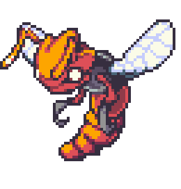
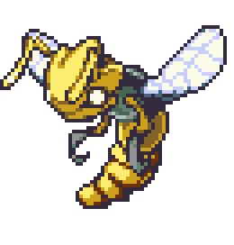
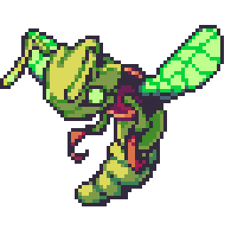

| ← #010 Swurmy | #011 Beezel | #012 ??? → |
|---|
| Normal Form | Corodex Description | Type |
|---|---|---|
|  | Beezel are hunted down in cities, so most of them are forced to stay in the countryside, plotting revenge. |  |
| Potent Form | Locations Data | Evolution Line |
|  | - Hayville - Woodlow Harbor - Trade with Mino (Hayville) |
- Swurmy - Beezel (Level 14 or raises the attack by 6 stages in a single battle) - ??? (Level ???) |
| Perfect Form | Traits | |
|  | - Strategist (20/70) - Slippery (20/70) - Inner Fire (15/70) - Antidote (15/70) |
| Stats | |
|---|---|
| HP | 60 |
| Attack | 45 |
| Defense | 22 |
| Sp. Attack | 20 |
| Sp. Defense | 30 |
| Speed | 40 |
| Skill set | |
|---|---|
| Level 1 | Slam |
| Level 3 | Rage |
| Level 8 | Venomous Bees |
| Level 11 | Double Sting |
| Level 13 | Precision Eye |
| Level 18 | Feelers |